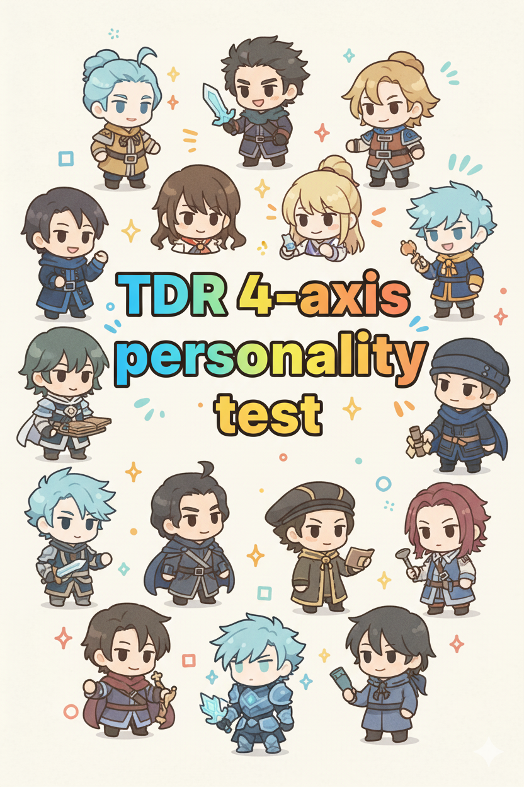

世界観を統一
夜空のような深い背景、発光するUI、ガラス調のカードで、診断サイト全体に一貫したムードを持たせます。
内外、温度、深度、硬度の4軸をもとに、今の自分がどう動きやすいかを立体的に可視化する診断サイトです。静的サイトの軽さはそのままに、世界観ごと没入できる見た目へ引き上げます。

単なる色替えではなく、トップ、テスト、アトラスをひとつの物語としてつなぐ方向で強化できます。
夜空のような深い背景、発光するUI、ガラス調のカードで、診断サイト全体に一貫したムードを持たせます。
数値バー、可動域、タイプコード、関連タイプをひと目で読めるレイアウトにして、納得感を上げます。
重いフレームワークを増やさず、HTML/CSS/JavaScriptだけで高級感のある演出に寄せられます。
入口から結果まで、気持ちが切れない設計にしています。
最初に診断の価値と空気感が伝わるよう、ヒーローと情報配置を整理します。
進捗、設問、レンジ入力、結果プレビューを一画面で見やすくし、離脱しづらくします。
結果から16分類へ自然に流れ、他タイプも比較したくなる密度のある見た目に整えます。
「あなたはこのタイプです」で終わらせず、動き方の幅まで見える設計です。
今のリポジトリ構成なら、画像やタイプデータを活かしながらかなりリッチにできます。今回の調整では、既存アセットを使って印象と読みやすさの両方を上げます。